#c1#این فصل نقطهٔ شروع کار با پنل مدیریت است: ورود امن، خواندن داشبورد و شناخت ساختار منو. مدیران تازهوارد بهتر است پیش از هر کار دیگری این فصل را بخوانند.
پنل مدیریت مسیر ورود جداگانهای دارد و از حساب مشتریان کاملاً مستقل است. نشست مدیر و نشست مشتری همزمان و بدون تداخل نگهداری میشوند.
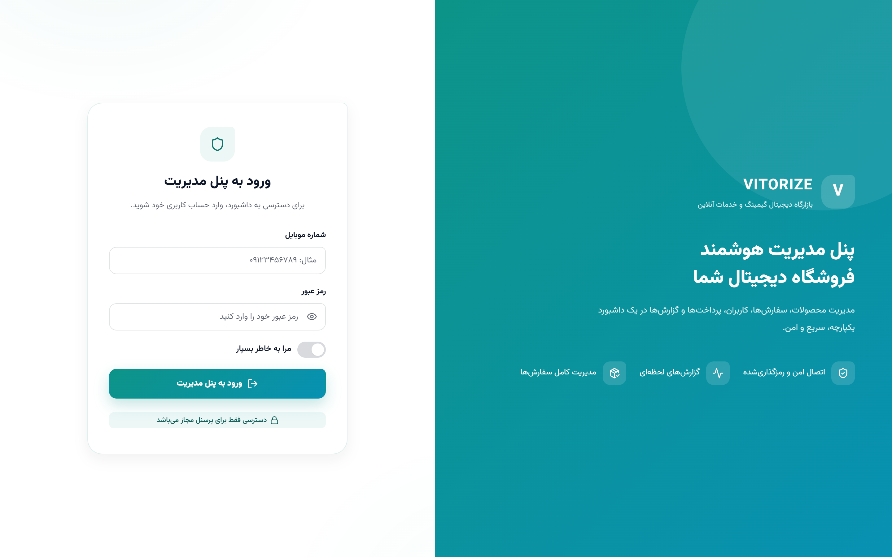
شمارهٔ موبایل و رمز عبور حساب مدیریتی را وارد کنید. در صورت نادرستبودن اطلاعات، پیام خطا بالای فرم نمایش داده میشود و روی همان صفحه میمانید. پس از چند تلاش ناموفق پیاپی، ورود برای مدتی کوتاه محدود میشود؛ این محدودیت عمدی و برای محافظت از پنل است.
داشبورد نخستین صفحهٔ پس از ورود است و وضعیت فروشگاه را در یک نگاه نشان میدهد.
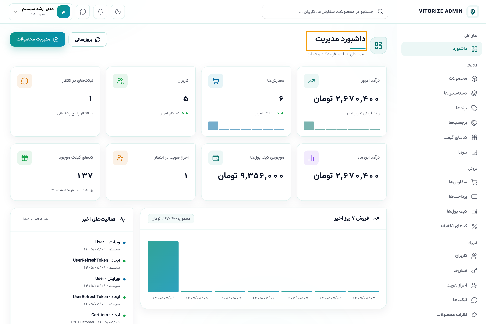
ردیف بالای صفحه هشت کارت شاخص دارد:
| کارت | معنا و کاربرد مدیریتی |
|---|---|
| درآمد امروز | مجموع فروش موفق امروز؛ نبض روزانهٔ کسبوکار. نمودار کوچک زیر آن روند هفت روز اخیر را نشان میدهد. |
| درآمد این ماه | مجموع فروش موفق ماه جاری؛ برای پایش هدف ماهانه. |
| سفارشها | تعداد کل سفارشها و تعداد سفارش امروز. |
| کاربران | تعداد کل کاربران و ثبتنامهای امروز. |
| کدهای گیفت موجود | موجودی قابل فروش، با تفکیک «رزروشده» و «فروختهشده». عدد پایین یعنی خطر اتمام موجودی. |
| تیکتهای در انتظار | تیکتهایی که منتظر پاسخ پشتیبانیاند. |
| احراز هویت در انتظار | درخواستهای احراز هویت در صف بررسی. |
| موجودی کیف پولها | جمع موجودی کیف پول همهٔ کاربران؛ نمایانگر تعهد مالی فروشگاه. |
پایین صفحه، نمودار «فروش ۷ روز اخیر» و فهرست «فعالیتهای اخیر» قرار دارند. دکمههای «مدیریت محصولات» و «بروزرسانی» در بالای صفحه، میانبر و تازهسازی دادهها هستند.
نوار کناری راست، همهٔ بخشها را در شش گروه سازمان میدهد:
| گروه | بخشها |
|---|---|
| نمای کلی | داشبورد |
| کاتالوگ | محصولات، دستهبندیها، برندها، برچسبها، کدهای گیفت، بنرها |
| محتوا | صفحهها، سوالات متداول |
| فروش | سفارشها، پرداختها، کیف پولها، کدهای تخفیف |
| کاربران | کاربران، نقشها، احراز هویت، سیاستهای احراز هویت، تیکتها، نظرات محصولات، اعلانها، مدیریت پیامک |
| سیستم | پایش سامانه، گزارشها، تنظیمات، لاگ عملیات، لاگ خطاها، لاگ امنیتی، ابزارها |
در نوار بالای پنل، کادر «جستجو در محصولات، سفارشها، کاربران …» میانبر رسیدن سریع به یک رکورد است؛ برای پاسخ به مشتری، شمارهٔ سفارش را همانجا وارد کنید. کلید تغییر حالت روشن/تاریک نیز در همین نوار قرار دارد و فقط بر ظاهر پنل اثر میگذارد.
#c2#کاتالوگ، هستهٔ فروشگاه است. این فصل چرخهٔ کامل محصول و ساختارهای پیرامون آن — دستهبندی، برند، برچسب و بنر — را شرح میدهد.
این صفحه مرکز فرماندهی کاتالوگ است: مشاهده، جستجو، فیلتر و دسترسی به ایجاد و ویرایش.
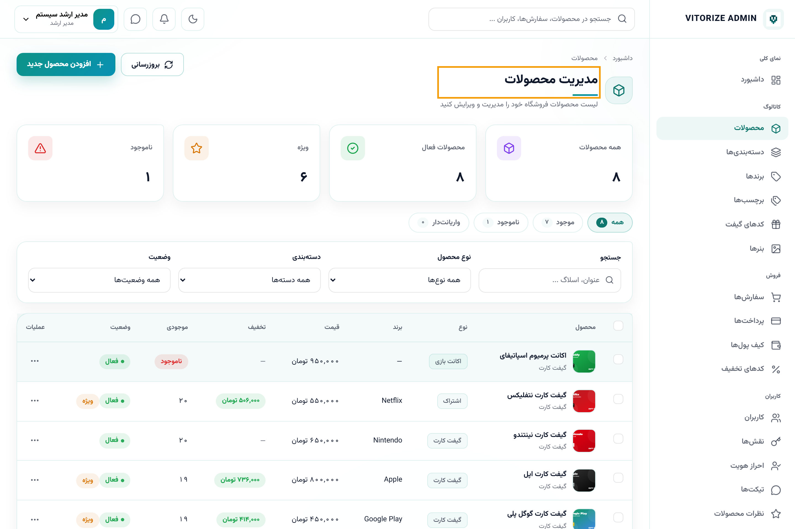
از بالای صفحه محصول تازه بسازید، با کادر جستجو و فیلترها فهرست را محدود کنید و از منوی عملیات هر ردیف به ویرایش، جزئیات و تصاویر آن محصول بروید. ستون وضعیت نشان میدهد محصول «فعال» است یا خیر؛ محصول غیرفعال در فروشگاه دیده نمیشود.
برای عرضهٔ هر کالای تازه از فرم ایجاد محصول استفاده کنید. تا وقتی محصول ساخته و فعال نشود، در فروشگاه دیده نمیشود.
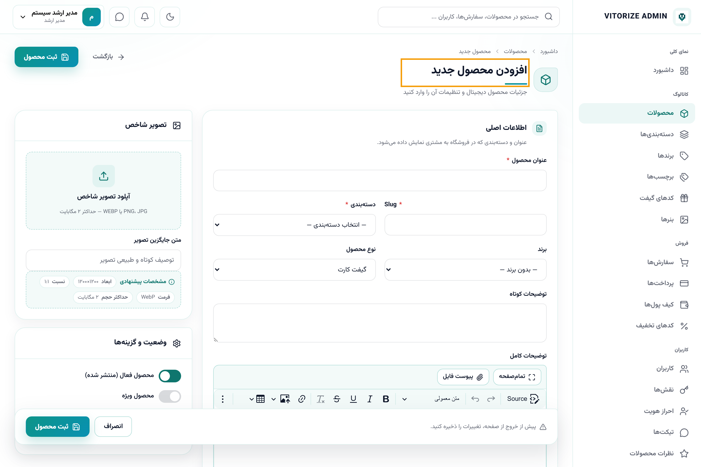
مهمترین فیلدها:
| فیلد | توضیح و نکته |
|---|---|
| دستهبندی الزامی | گروهی که محصول در آن قرار میگیرد و محل نمایش آن در فروشگاه و فیلترها را تعیین میکند. دسته را پیش از محصول بسازید. |
| برند | اختیاری، اما برای فیلتر برند و صفحهٔ اختصاصی برند مفید است. |
| عنوان الزامی | نام نمایشی محصول؛ کوتاه و گویا. |
| نامک (Slug) الزامی | شناسهٔ آدرس صفحه. باید یکتا باشد؛ تغییر آن پس از انتشار، لینکهای قبلی را میشکند. |
| توضیح کوتاه / توضیح کامل | توضیح کوتاه در کارت محصول و توضیح کامل با ویرایشگر متن غنی در صفحهٔ محصول دیده میشود. |
| روش تحویل الزامی | آنی، دستی یا نیازمند پشتیبانی. تعیینکنندهترین انتخاب؛ در فصل ۴ کامل توضیح داده شده است. |
| قیمت پایه الزامی | قیمت اصلی. واحد پول را هماهنگ انتخاب کنید؛ همهٔ اقلام یک سبد باید همواحد باشند. |
| قیمت با تخفیف | اگر پر و کمتر از قیمت پایه باشد، قیمت فروش میشود و برچسب تخفیف نمایش مییابد. |
| حداقل/حداکثر تعداد | محدودهٔ مجاز تعداد در هر خرید. |
| ویژه | نمایش در بخش محصولات ویژهٔ صفحهٔ نخست. |
| فعال | وضعیت انتشار؛ تا فعالنشدن، مشتری محصول را نمیبیند. |
| عنوان و توضیحات سئو | برای نتایج موتور جستجو. اگر خالی بماند از عنوان و توضیح محصول استفاده میشود. |
| تصویر شاخص و گالری | تصویر اصلی کارت محصول و تصاویر تکمیلی صفحهٔ محصول. |
برخی کالاها برای انجام سفارش به اطلاعاتی از مشتری نیاز دارند؛ مثلاً ایمیل حساب بازی یا شناسهٔ کاربری. این فیلدها را در فرم محصول تعریف میکنید و هنگام افزودن به سبد از مشتری پرسیده میشوند.
برای هر فیلد، عنوان، نوع (متن، ایمیل، عدد، انتخابی و…) و مهمتر از همه الزامی یا اختیاری بودن را مشخص میکنید. این انتخاب مستقیماً در فروشگاه اثر دارد: فیلد الزامی با ستارهٔ قرمز و فیلد اختیاری با برچسب «اختیاری» به مشتری نشان داده میشود و تا پرشدن درست فیلدهای الزامی، محصول به سبد اضافه نمیشود.
در همین فرم مشخص میکنید که خرید این محصول نیازمند احراز هویت هست یا نه. سه حالت وجود دارد:
| حالت | رفتار |
|---|---|
| بدون نیاز | خرید بدون احراز هویت انجام و تحویل میشود. |
| همیشه | هر خرید این کالا، صرفنظر از مبلغ، مشمول احراز هویت است. |
| بالاتر از آستانه | تنها وقتی مبلغ آن قلم از حد تعیینشده بیشتر باشد، احراز هویت لازم میشود. |
این سه بخش، ساختار مرور و فیلتر فروشگاه را میسازند و هر سه فهرست سادهای با امکان ایجاد، ویرایش و فعال/غیرفعالکردن دارند.
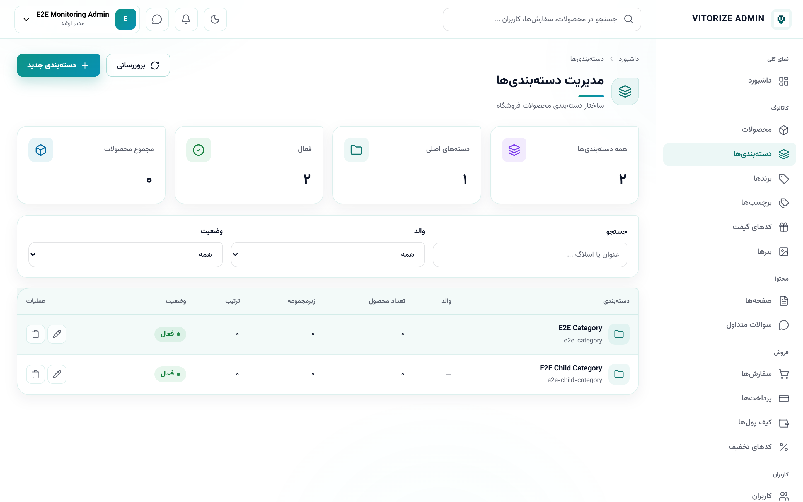
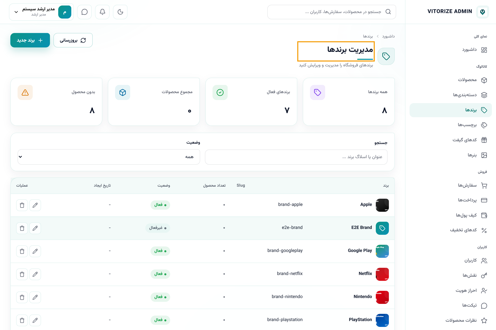
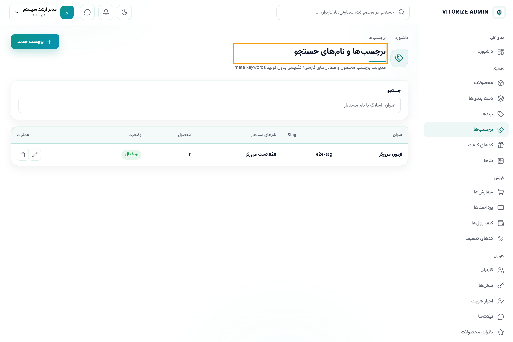
دستهبندیها میتوانند سلسلهمراتبی باشند (دستهٔ والد و زیردسته). ترتیب نمایش و وضعیت فعال/غیرفعال هر مورد از همین فهرست قابل تنظیم است؛ موارد غیرفعال در فروشگاه دیده نمیشوند.
بنرها تصاویر تبلیغاتی صفحهٔ نخست و بخشهای ویترین هستند. برای هر بنر تصویر، لینک مقصد، ترتیب و وضعیت را تعیین میکنید.
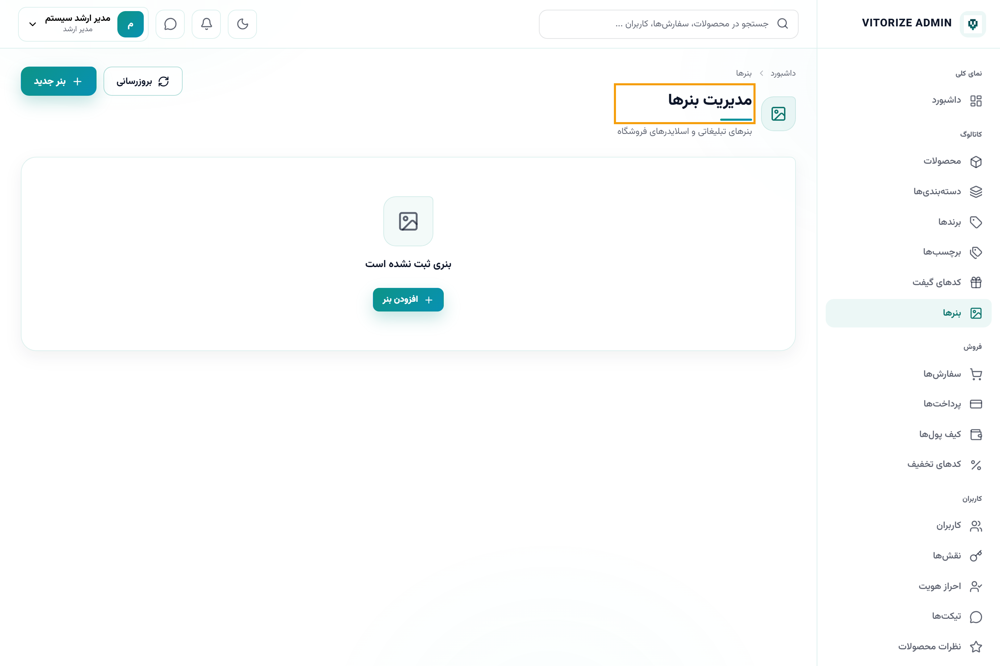
#c3#کدهای گیفت، موجودی واقعی کالاهای «تحویل آنی» هستند. مدیریت درست این بخش تعیین میکند که مشتری بلافاصله پس از پرداخت کد بگیرد یا با پیام «موجودی کافی نیست» روبهرو شود.
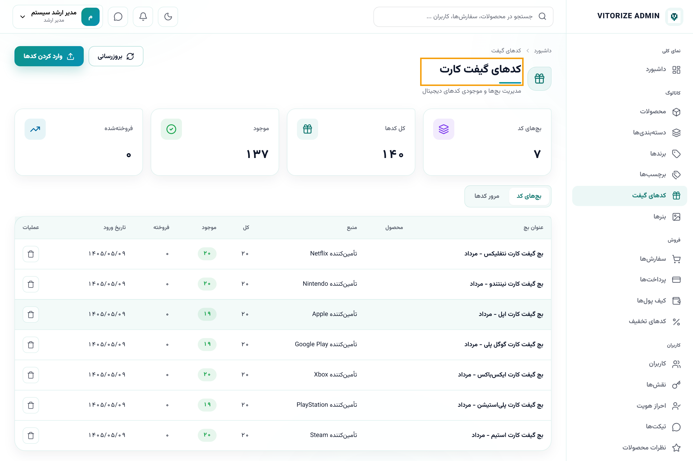
هر کد به یک محصول (و در صورت وجود، یک نسخه/واریانت) تعلق دارد و در یکی از وضعیتهای زیر است:
| وضعیت | معنا |
|---|---|
| موجود | آمادهٔ فروش؛ در شمارش موجودی محصول لحاظ میشود. |
| رزروشده | در جریان یک سفارش پرداختنشده یا نگهداشتهشده است و به مشتری دیگری داده نمیشود. |
| فروختهشده | به مشتری تحویل داده شده است. |
برای افزودن موجودی، کدها را از ابزار ورود دستهای وارد کنید؛ محصول مقصد را انتخاب و فهرست کدها را وارد کنید. پس از ثبت، موجودی محصول بلافاصله بهروز میشود.
#c4#این فصل، عملیاتیترین بخش پنل است: پیگیری سفارشها، خواندن درست وضعیتها و انجام اقدام مناسب برای هر روش تحویل.
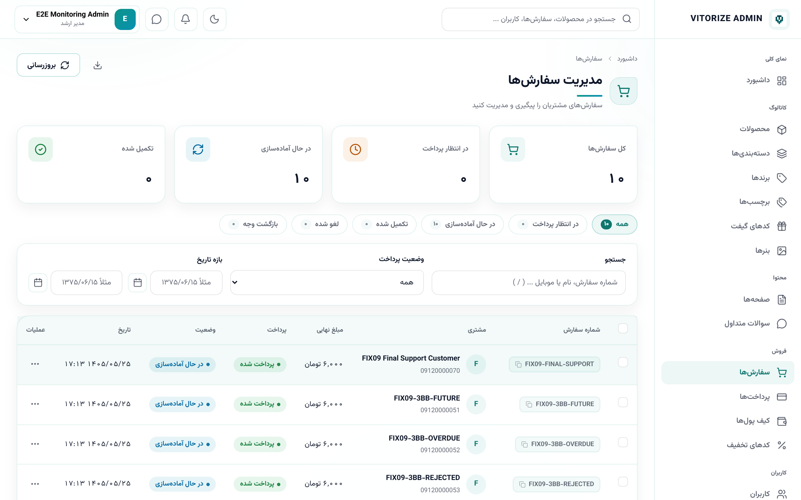
وضعیتهای جاری سفارش:
| وضعیت | معنا و اقدام مدیر |
|---|---|
| در انتظار پرداخت | سفارش ثبت شده اما پرداخت کامل نشده است. هیچ کالایی نباید تحویل شود. |
| در حال آمادهسازی | پرداخت انجام شده و سفارش در جریان تحویل است. اقلام «تحویل دستی» و «نیازمند پشتیبانی» در همین مرحله رسیدگی میشوند. |
| تکمیلشده | همهٔ اقلام تحویل شدهاند. |
| لغوشده | سفارش لغو شده است. |
با باز کردن یک سفارش، همهٔ اطلاعات لازم برای رسیدگی در یک صفحه جمع میشود.
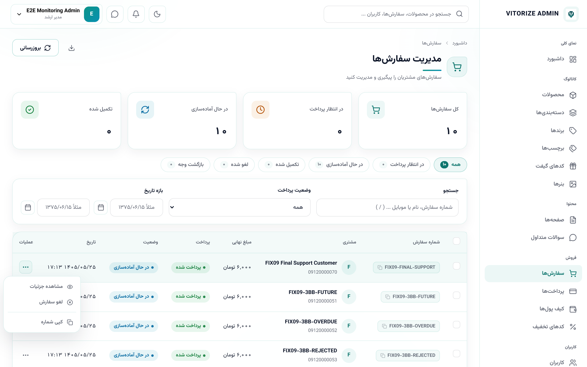
در این صفحه میبینید: مشخصات مشتری، اقلام سفارش با اطلاعات واردشدهٔ خریدار، تفکیک مبلغ (جمع اقلام، تخفیف، مالیات در صورت فعالبودن و مبلغ نهایی)، وضعیت پرداخت و برای هر قلم، وضعیت تحویل و وضعیت احراز هویت. دکمههای عملیاتی تنها برای اقلامی ظاهر میشوند که واقعاً اقدام مدیر را میپذیرند.
ویتورایز سه روش تحویل دارد و اقدام مجاز مدیر در هر کدام متفاوت است:
| روش تحویل | رفتار سامانه و اقدام مدیر |
|---|---|
| تحویل آنی | پس از پرداخت موفق، کد بهصورت خودکار از موجودی تخصیص و به مشتری تحویل میشود. مدیر معمولاً نیازی به اقدام ندارد؛ فقط باید موجودی کد را تأمین کند. |
| تحویل دستی | مدیر باید محتوای تحویل را ثبت کند. برای این اقلام دکمهٔ ثبت تحویل دستی در جزئیات سفارش نمایش داده میشود. |
| نیازمند پشتیبانی | پس از پرداخت، سامانه بهصورت خودکار یک تیکت آمادهسازی مرتبط با سفارش میسازد. رسیدگی از مسیر تیکت انجام میشود. |
#c5#این فصل سه بخش مالی پنل را پوشش میدهد: سوابق پرداخت، کیف پول کاربران و کدهای تخفیف.
فهرست پرداختها، سابقهٔ تراکنشهای درگاه را نشان میدهد و مرجع بررسی مغایرتهاست.
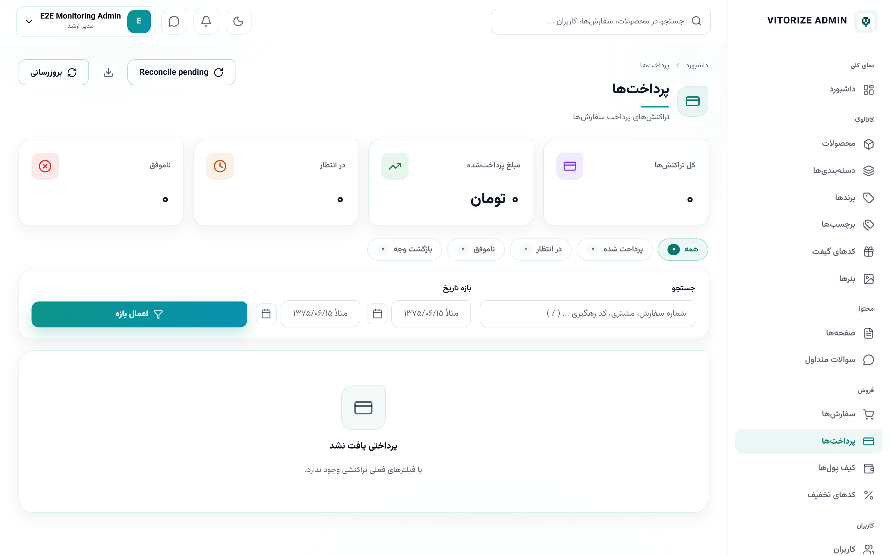
برای هر پرداخت، سفارش مرتبط، مبلغ و وضعیت (موفق، ناموفق یا در انتظار) ثبت میشود. اگر مشتری مدعی کسر وجه بدون ثبت سفارش است، ابتدا همین فهرست را با شمارهٔ سفارش بررسی کنید.
این بخش موجودی کیف پول کاربران و تراکنشهای آنها را نشان میدهد.
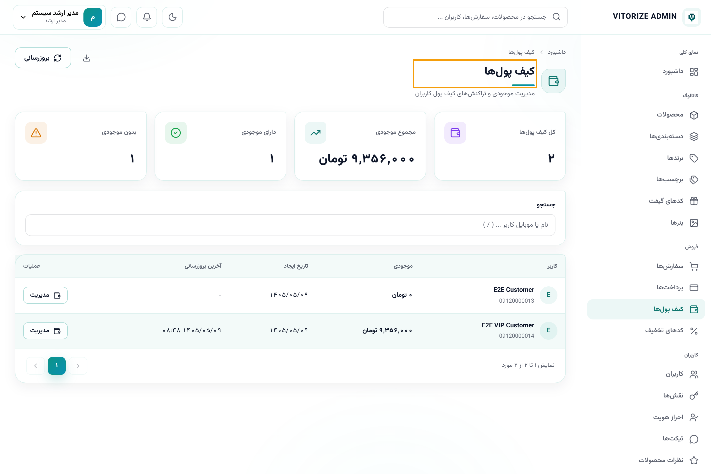
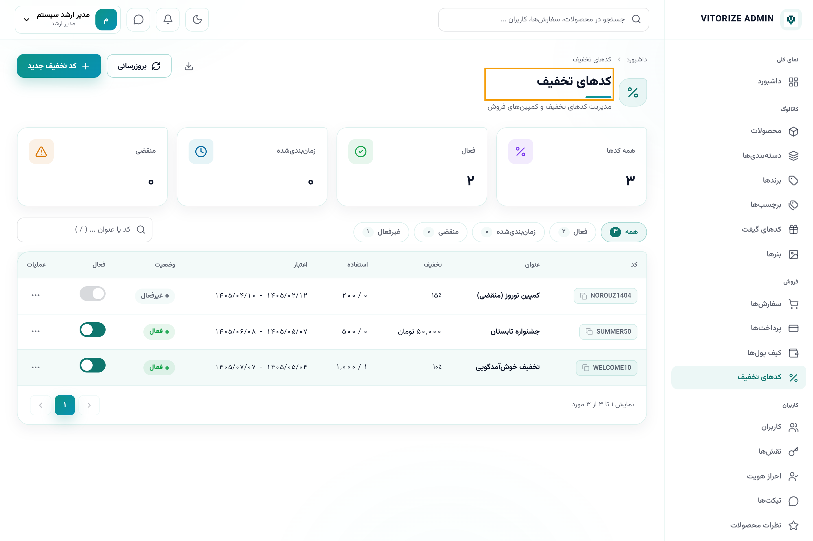
هنگام ساخت کد تخفیف این موارد را تعیین میکنید:
| تنظیم | توضیح |
|---|---|
| کد | عبارتی که مشتری در تسویهحساب وارد میکند. |
| نوع تخفیف | درصدی یا مبلغ ثابت. |
| مقدار | درصد یا مبلغ کسرشونده. |
| بازهٔ اعتبار | تاریخ شروع و پایان. خارج از این بازه کد پذیرفته نمیشود. |
| حداقل مبلغ سفارش | اگر جمع سفارش کمتر باشد، کد رد میشود. |
| سقف استفاده | تعداد دفعات مجاز استفاده؛ پس از اتمام، کد پذیرفته نمیشود. |
| فعال | کد غیرفعال حتی در بازهٔ اعتبار هم کار نمیکند. |
#c6#مالیات بر ارزش افزوده بهصورت متمرکز و از بخش «پرداخت» تنظیمات کنترل میشود و بر مبلغ نهایی همهٔ سفارشهای تازه اثر میگذارد.
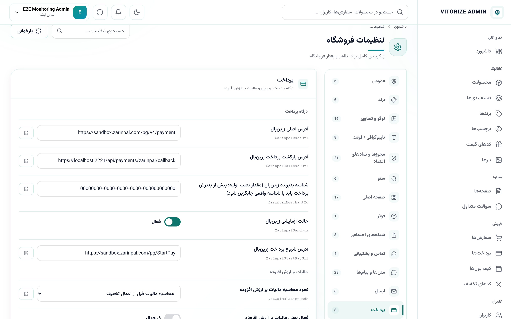
سه تنظیم اصلی وجود دارد:
| تنظیم | توضیح |
|---|---|
| فعالبودن مالیات | اگر خاموش باشد، هیچ ردیف مالیاتی در سبد، تسویهحساب و سفارش نمایش داده نمیشود. |
| نرخ مالیات | درصدی که روی مبنای محاسبه اعمال میشود. |
| شیوهٔ محاسبه | «قبل از تخفیف» یا «بعد از تخفیف». |
فرض کنید جمع اقلام سفارش ۱٬۰۰۰٬۰۰۰ تومان، تخفیف ۲۰۰٬۰۰۰ تومان و نرخ مالیات ۱۰٪ باشد:
| شیوه | محاسبه | مبلغ نهایی |
|---|---|---|
| قبل از تخفیف | مالیات روی ۱٬۰۰۰٬۰۰۰ محاسبه میشود: ۱۰۰٬۰۰۰ تومان | ۹۰۰٬۰۰۰ تومان |
| بعد از تخفیف | مالیات روی ۸۰۰٬۰۰۰ محاسبه میشود: ۸۰٬۰۰۰ تومان | ۸۸۰٬۰۰۰ تومان |
#c7#این فصل مدیریت حسابهای مشتریان و دسترسیهای کارکنان را پوشش میدهد.
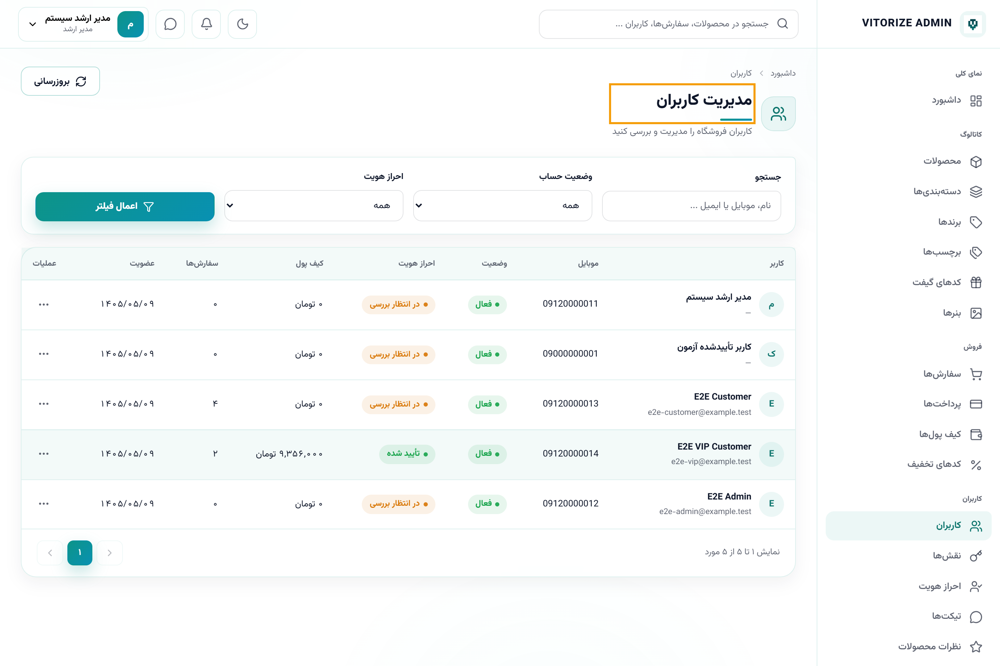
از این فهرست میتوانید کاربران را با نام یا شمارهٔ موبایل جستجو کنید و به جزئیات هر کاربر بروید. در جزئیات، اطلاعات حساب، وضعیت فعال/غیرفعال، وضعیت احراز هویت و سوابق مرتبط دیده میشود.
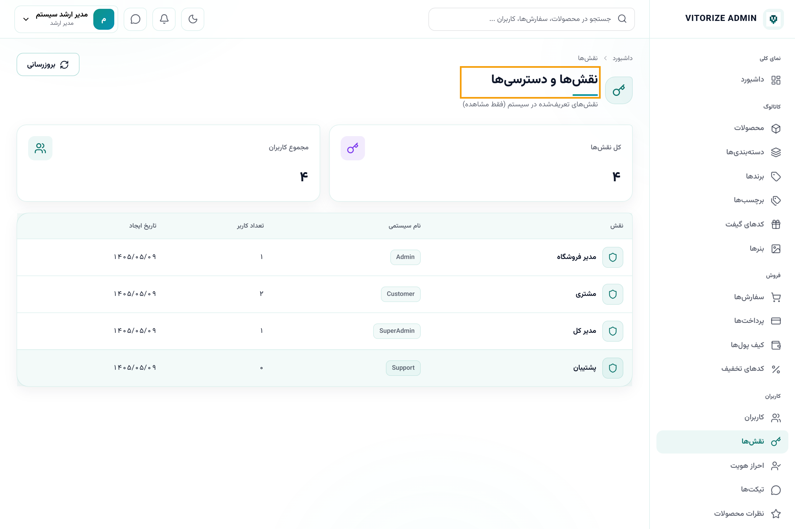
نقشها تعیین میکنند هر حساب مدیریتی به کدام بخشها دسترسی دارد. دسترسیهای حساس — مانند مدیریت کاربران، تنظیمات و ارسال گروهی اعلان — تنها برای نقشهای بالادستی در دسترس است.
#c8#بررسی مدارک، حساسترین وظیفهٔ روزانهٔ پنل است: هم از فروشگاه در برابر سوءاستفاده محافظت میکند و هم مستقیماً تجربهٔ مشتری واقعی را تحت تأثیر میگذارد.
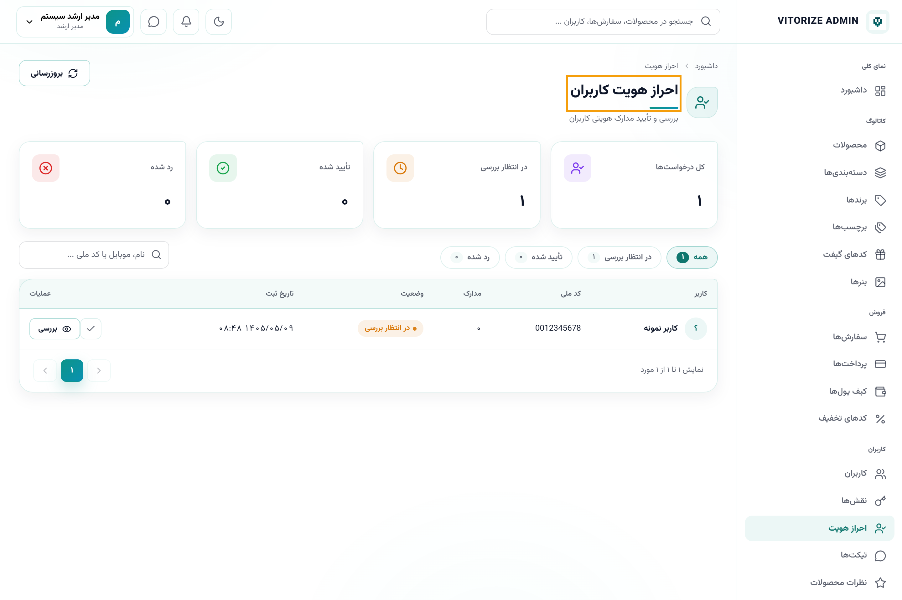
درخواستهای در انتظار بررسی در بالای صف قرار میگیرند. با باز کردن یک درخواست، اطلاعات هویتی واردشده و مدارک بارگذاریشده را میبینید.
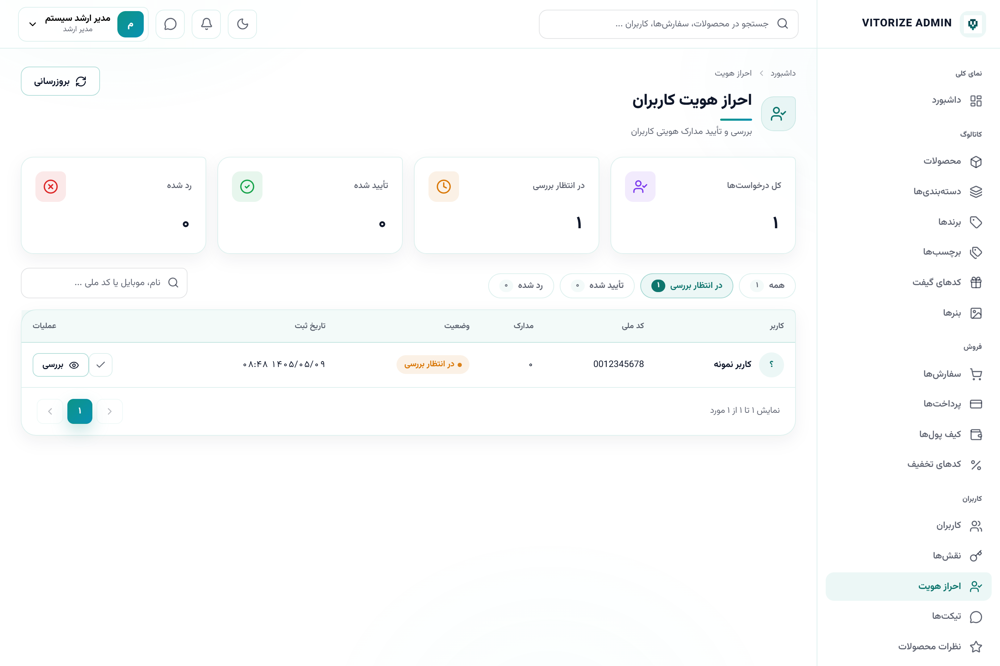
پس از بررسی، یکی از دو تصمیم را میگیرید:
برای اقدام مشتری مهلتی در نظر گرفته میشود که در همان صفحه دیده میشود. اگر مهلت سپری شود، درخواست منقضی میگردد؛ در صورت نیاز میتوانید مهلت را دوباره باز کنید تا مشتری فرصت اصلاح داشته باشد. اگر پس از چند نوبت، مدارک بهصورت نهایی پذیرفته نشود، وضعیت آن قلم مشخص میشود و تعیینتکلیف مالی آن بهصورت جداگانه و ثبتشده انجام میگیرد.
#c9#این بخش تعیین میکند در فرایند احراز هویت دقیقاً چه مدارکی از مشتری خواسته شود و چه راهنمایی به او نمایش داده شود.
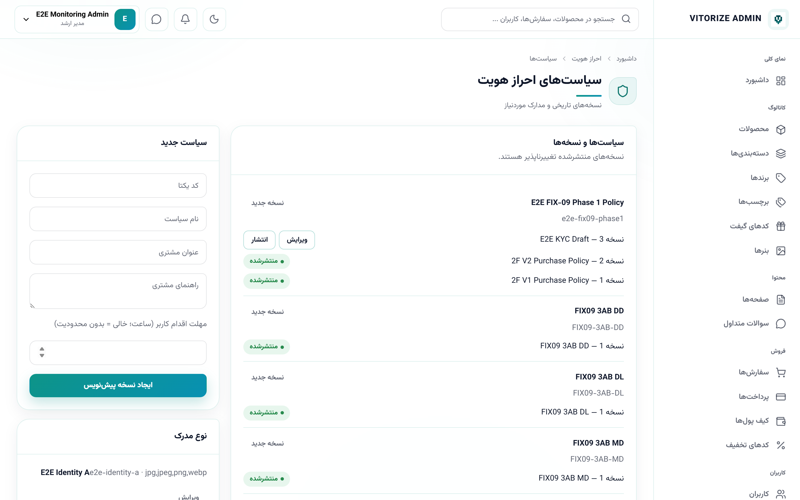
در هر سیاست مشخص میکنید:
| مورد | توضیح |
|---|---|
| مدارک موردنیاز | نوع مدارکی که مشتری باید بارگذاری کند (مانند کارت ملی یا کارت بانکی). |
| الزامی یا اختیاری بودن هر مدرک | مدارک الزامی تا بارگذاری نشوند، امکان ثبت درخواست وجود ندارد. |
| راهنمای هر مدرک | متن توضیحی که در صفحهٔ احراز هویت به مشتری نشان داده میشود. |
| مهلت اقدام | فرصت مشتری برای ارسال یا اصلاح مدارک. |
#c10#گروه «محتوا» دو بخش دارد: صفحههای اطلاعرسانی سایت و سوالات متداول. هر دو مستقیماً در فروشگاه به مشتری نمایش داده میشوند.
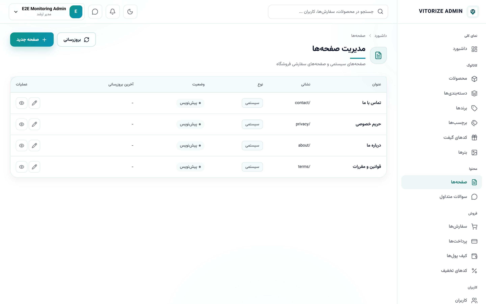
دو نوع صفحه وجود دارد:
| نوع | توضیح |
|---|---|
| صفحات سیستمی | «دربارهٔ ما»، «قوانین و مقررات»، «حریم خصوصی» و «تماس با ما». این صفحات از پیش تعریف شدهاند و در فوتر سایت لینک دارند. |
| صفحات سفارشی | صفحاتی که خودتان میسازید؛ با نامک دلخواه و آدرس اختصاصی. |
برای هر صفحه، عنوان، نامک، محتوا (با ویرایشگر متن غنی)، عنوان و توضیح سئو و وضعیت انتشار را تعیین میکنید. صفحهٔ منتشرنشده برای مشتری در دسترس نیست و آدرس آن پیام «یافت نشد» میدهد.
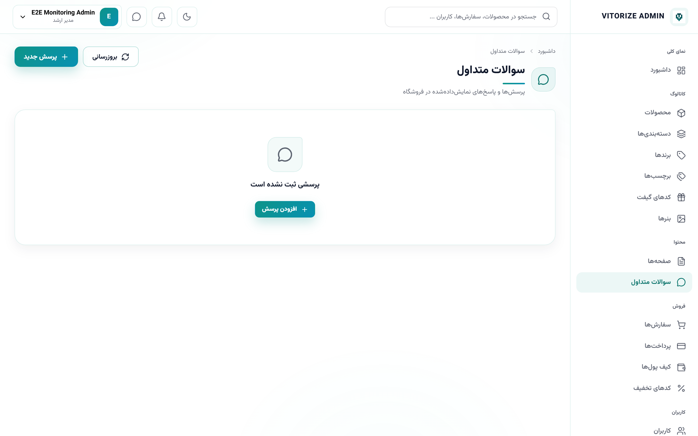
برای هر پرسش، متن پرسش، پاسخ، ترتیب نمایش و وضعیت فعال/غیرفعال را تعیین میکنید. موارد غیرفعال در صفحهٔ «سوالات متداول» فروشگاه دیده نمیشوند. ترتیب را طوری بچینید که پرتکرارترین پرسشها بالاتر باشند.
#c11#این فصل ابزارهای ارتباط با مشتری را پوشش میدهد: اعلانهای درونبرنامهای، اطلاعیهٔ گروهی و پیامک.
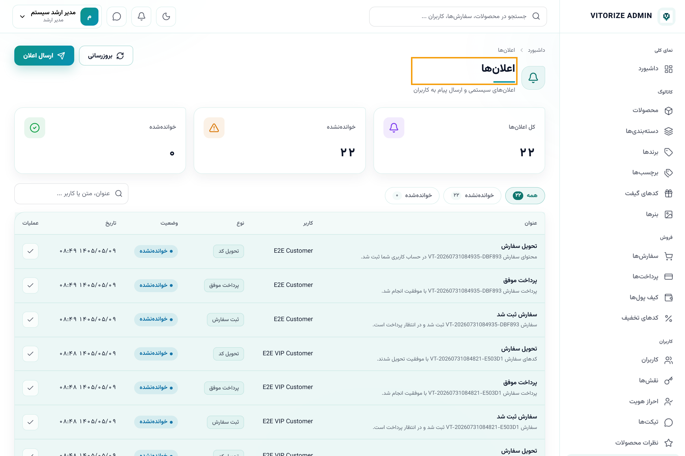
با «ارسال گروهی اعلان» میتوانید یک اطلاعیه را همزمان برای گروهی از مشتریان بفرستید.
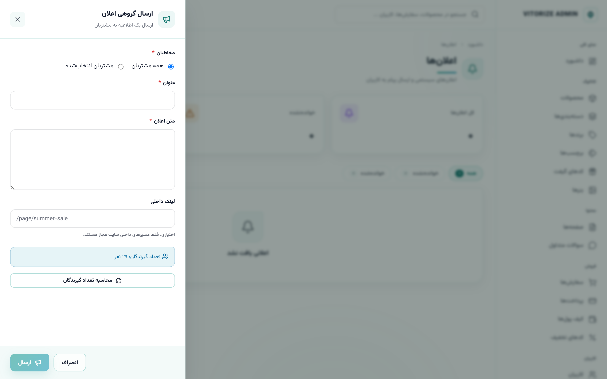
گامهای ارسال:
| نکته | توضیح |
|---|---|
| چه کسانی دریافت میکنند | فقط حسابهای مشتری فعال. حسابهای کارکنان و حسابهای غیرفعال در ارسال گروهی قرار نمیگیرند. |
| سقف گیرندگان | هر ارسال سقف مشخصی دارد؛ اگر تعداد از سقف بیشتر باشد، ارسال انجام نمیشود و پیام روشن دریافت میکنید. فهرست گیرندگان بیصدا کوتاه نمیشود. |
| متن اعلان | همیشه بهصورت متن ساده به مشتری نمایش داده میشود. |
| تاریخچه | هر ارسال با عنوان، نوع مخاطب، تعداد گیرندگان و وضعیت در تاریخچه ثبت میشود. |
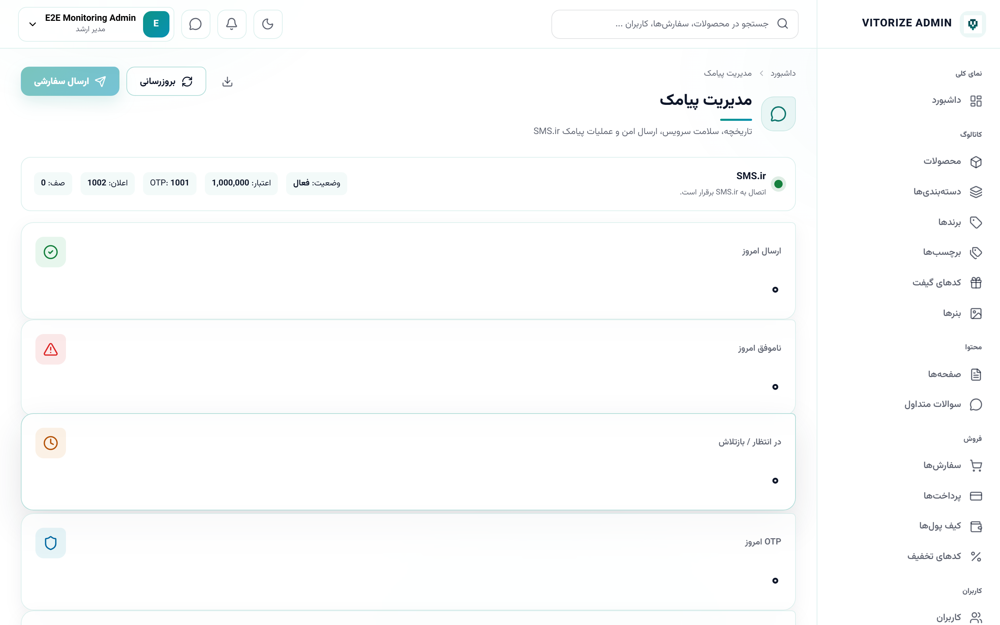
این بخش وضعیت سرویس پیامک، سوابق ارسال و ابزار آزمون ارسال را در اختیار میگذارد. پیامکها برای رویدادهای مهم مانند کد ورود یکبارمصرف استفاده میشوند. اگر مشتریان از دریافتنشدن کد ورود گزارش میدهند، ابتدا وضعیت و سوابق همین بخش را بررسی کنید.
#c12#تیکتها و نظرات، دو کانال بازخورد مستقیم مشتری هستند.
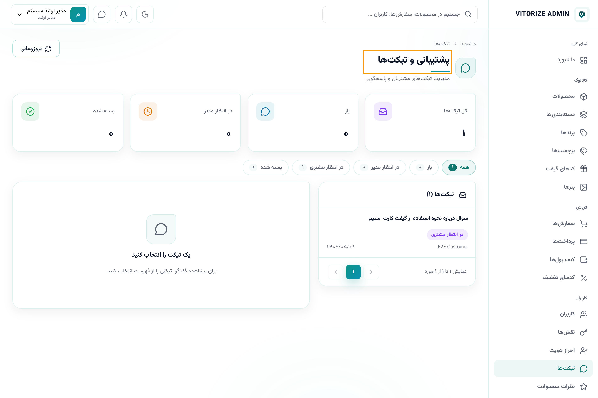
تیکتها هم توسط مشتری ساخته میشوند و هم بهصورت خودکار برای اقلام «نیازمند پشتیبانی» ایجاد میگردند. با باز کردن تیکت، گفتوگو را میبینید و پاسخ میدهید؛ پاسخ شما بلافاصله برای مشتری قابل مشاهده است و اعلان دریافت میکند.
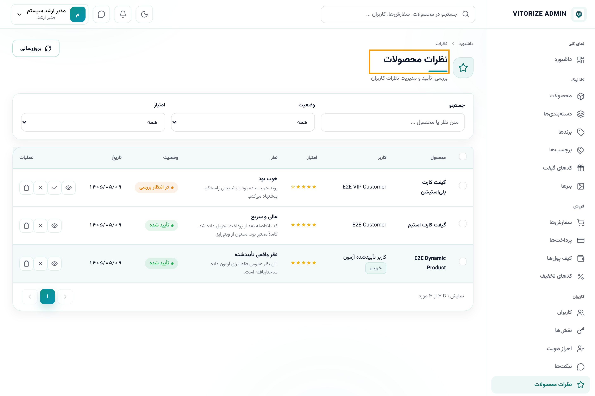
نظرات پیش از نمایش عمومی از این بخش بررسی و تأیید یا رد میشوند. نظر تأییدنشده در صفحهٔ محصول دیده نمیشود.
#c13#این گروه ابزارهای سلامت سامانه و ردیابی رویدادها را فراهم میکند.
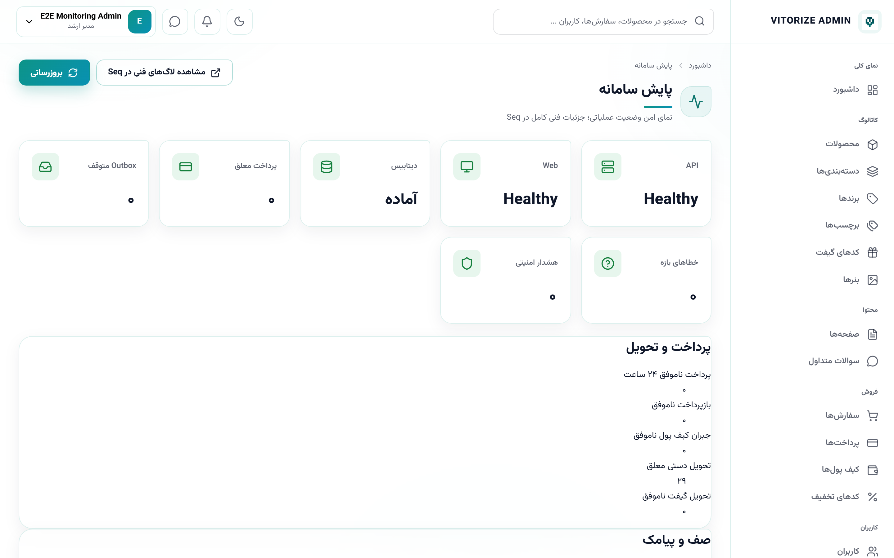
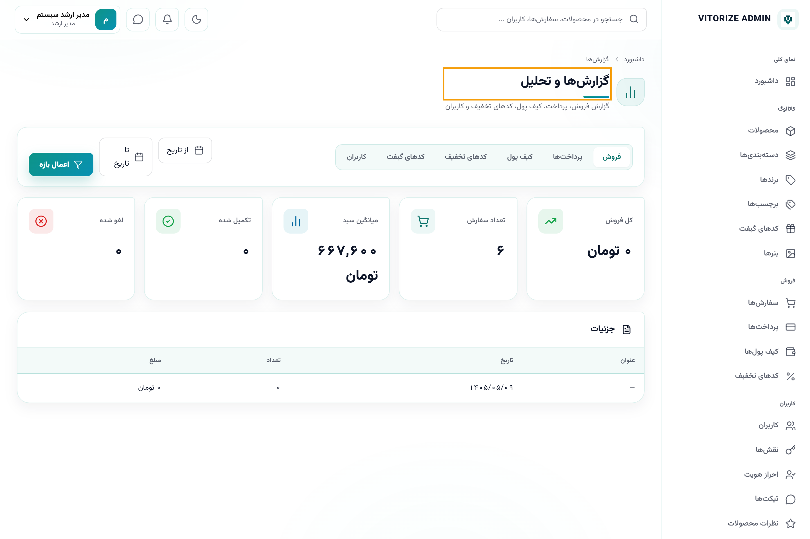
سه لاگ مجزا وجود دارد که هرکدام هدف روشنی دارند:
| لاگ | چه چیزی ثبت میکند و چه زمانی سراغش بروید |
|---|---|
| لاگ عملیات | تغییرات انجامشده روی رکوردها و اینکه چه کسی آنها را انجام داده است. برای پیگیری «چه کسی این را تغییر داد؟». |
| لاگ خطاها | خطاهای سامانه. اگر کاربران از ایراد فنی گزارش میدهند، اینجا را ببینید. |
| لاگ امنیتی | رویدادهای امنیتی مانند تلاشهای ناموفق ورود. |
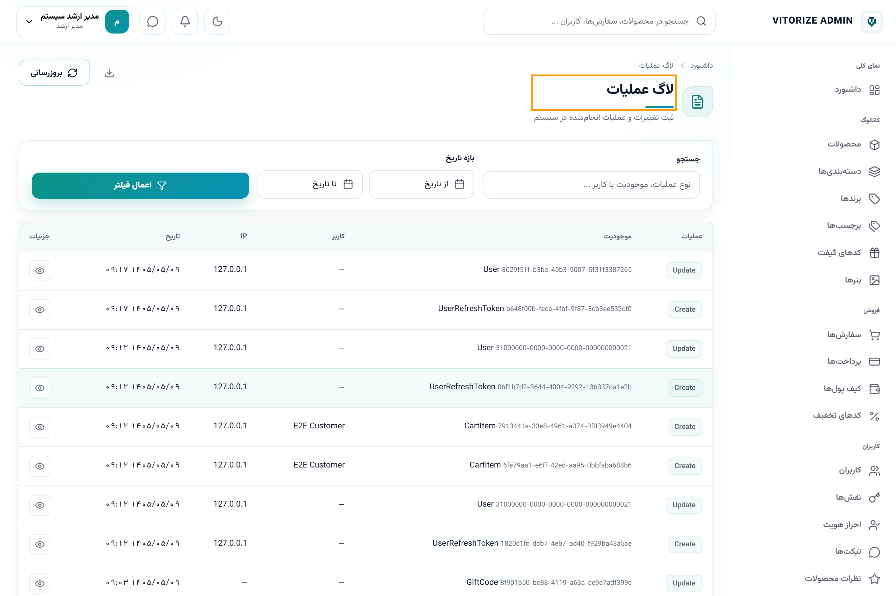
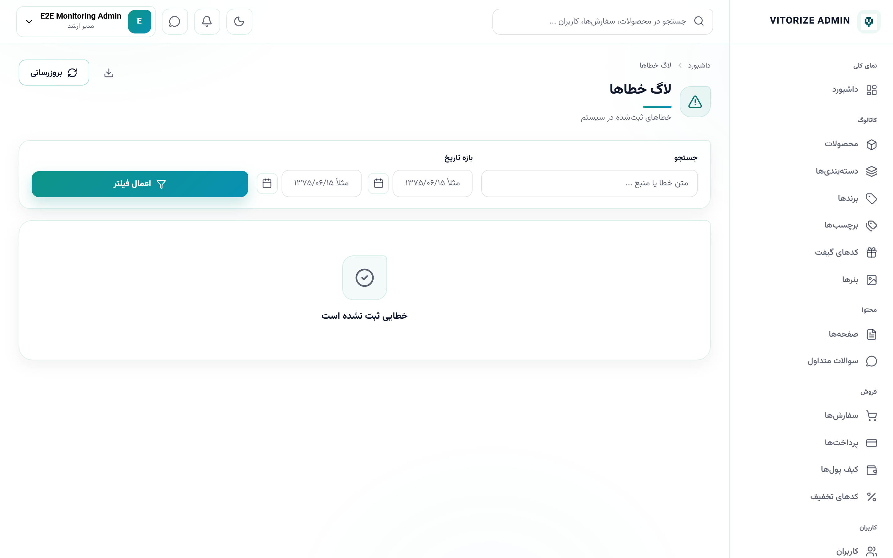
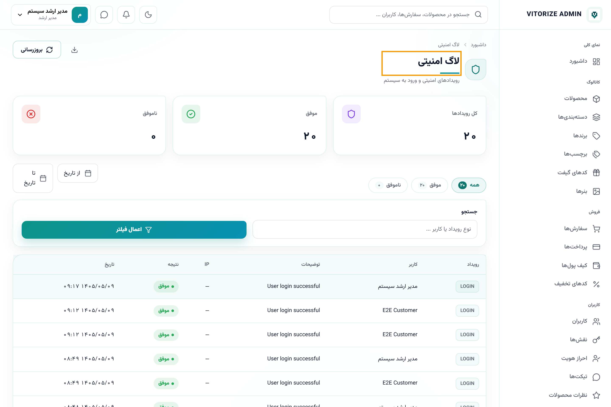
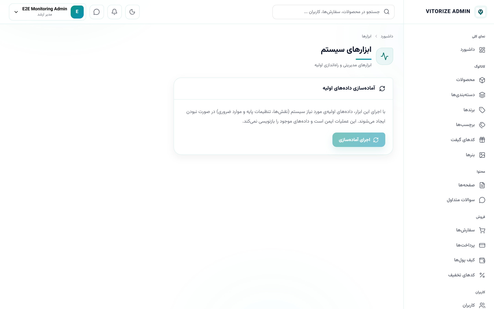
#c14#صفحهٔ تنظیمات با هفده تب سازماندهی شده است. هر تب گروهی از تنظیمات مرتبط را در بر میگیرد و تغییرات پس از ذخیره اعمال میشوند.
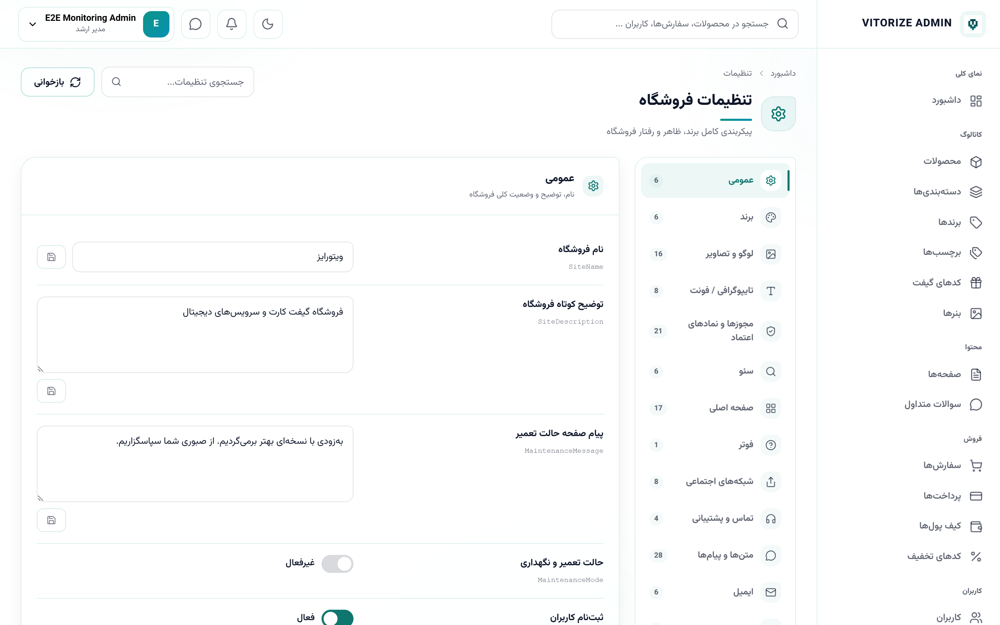
| تب | کاربرد |
|---|---|
| عمومی | نام، توضیح و وضعیت کلی فروشگاه. |
| برند | شعار، لوگوی اصلی و رنگ برند. |
| لوگو و تصاویر | لوگوها، فاوآیکون، تصاویر اشتراکگذاری، ماسکات و تصویر بارگذاری اولیه. |
| تایپوگرافی / فونت | آپلود، پیشنمایش و انتخاب فونت سراسری. |
| مجوزها و نمادهای اعتماد | تنظیم نمادهای اعتماد بهصورت امن. |
| سئو | عنوان، توضیح و کلمات کلیدی پیشفرض. |
| صفحه اصلی | بخش معرفی بالای صفحه، خبرنامه، دربارهٔ ما و نشانهای اعتماد. |
| فوتر | متن و توضیحات فوتر. |
| شبکههای اجتماعی | نشانی شبکههای اجتماعی فروشگاه. |
| تماس و پشتیبانی | ایمیل، تلفن، آدرس و ساعات کاری. |
| متنها و پیامها | متن حالتهای خالی و صفحات خطا. |
| ایمیل | پیکربندی ارسال ایمیل. |
| پرداخت | درگاه پرداخت و مالیات بر ارزش افزوده (فصل ۶). |
| امنیت | قوانین ورود و رمز عبور. |
| آپلودها | محدودیت حجم و فرمت تصاویر. |
| اعلانها | تنظیمات پیامک و اعلانها. |
| پیشرفته | اسکریپتها، کیف پول و موارد متفرقه. |
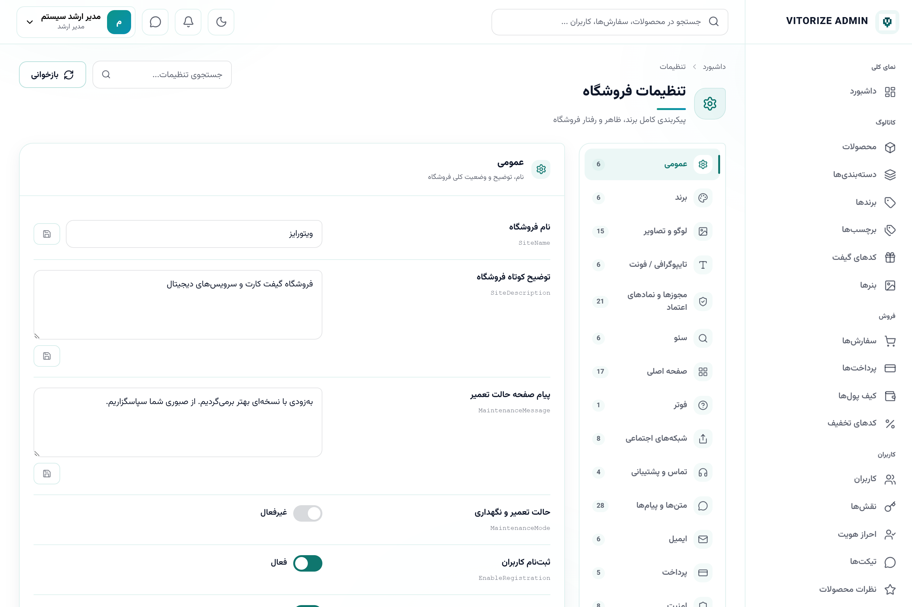
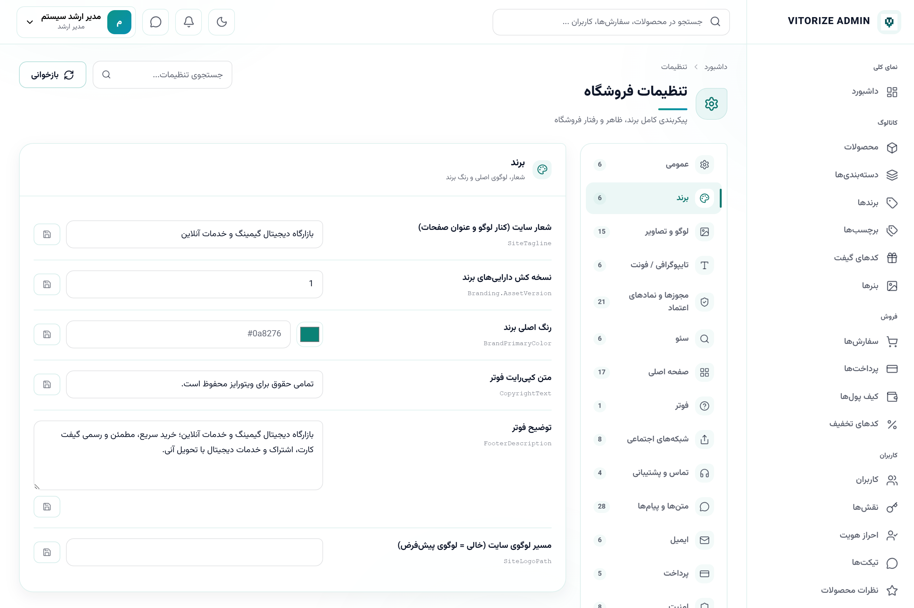
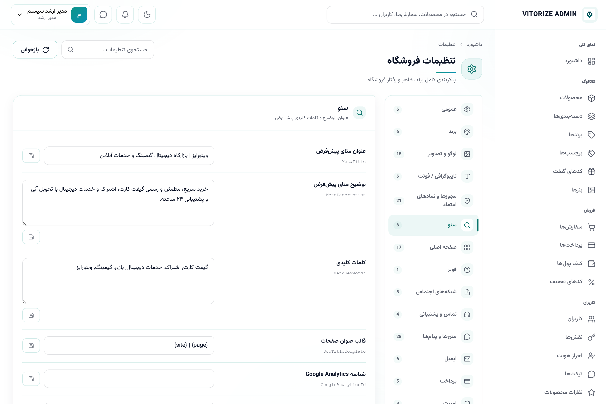
نام و توضیح فروشگاه در عنوان مرورگر و نتایج جستجو دیده میشوند. مقادیر سئو تنها پیشفرض هستند؛ هر محصول و صفحه میتواند مقدار اختصاصی خود را داشته باشد.
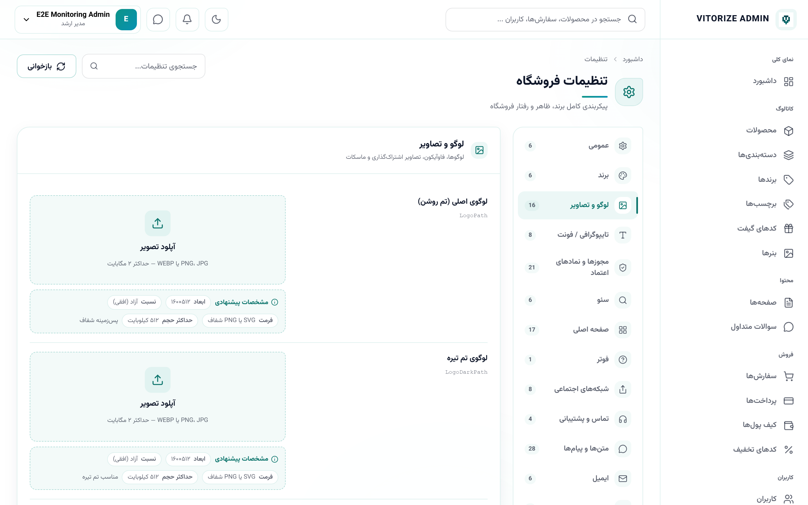
در این تب لوگوی حالت روشن و تاریک، فاوآیکون و تصاویر مورد استفاده در اشتراکگذاری تنظیم میشوند. کنار هر فیلد، مشخصات پیشنهادی (ابعاد، نسبت، فرمت و حداکثر حجم) نمایش داده میشود؛ رعایت آنها کیفیت نمایش را تضمین میکند.
هنگام باز شدن اولیهٔ برنامه، یک تصویر بارگذاری نمایش داده میشود. بهصورت پیشفرض این تصویر، نشان ویتورایز است؛ اما میتوانید تصویر یا انیمیشن اختصاصی فروشگاه را جایگزین کنید. این تنظیم در همان تب «لوگو و تصاویر» قرار دارد.
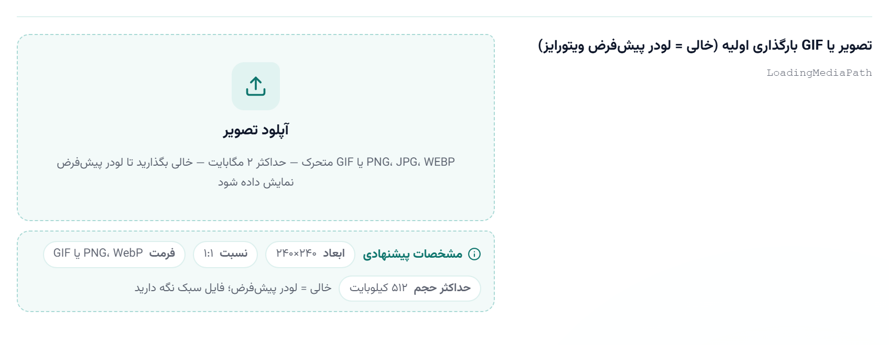
| مورد | توضیح |
|---|---|
| فرمتهای مجاز | PNG، JPG/JPEG، WebP و همچنین GIF متحرک. این تنها جایی در پنل است که تصویر متحرک پذیرفته میشود. |
| حداکثر حجم | ۲ مگابایت. مشخصات پیشنهادی ۲۴۰×۲۴۰ و حجم سبک است. |
| پیشنمایش | پس از آپلود، تصویر بلافاصله در همان فیلد نمایش داده میشود. |
| جایگزینی | برای تغییر، تصویر فعلی را حذف و تصویر تازه را آپلود کنید. |
| حذف / بازگشت به پیشفرض | با حذف تصویر، فیلد خالی میشود و لودر پیشفرض ویتورایز دوباره نمایش داده میشود. |
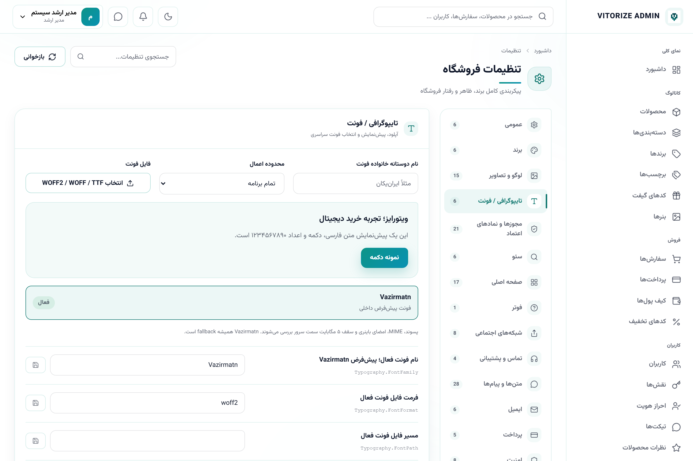
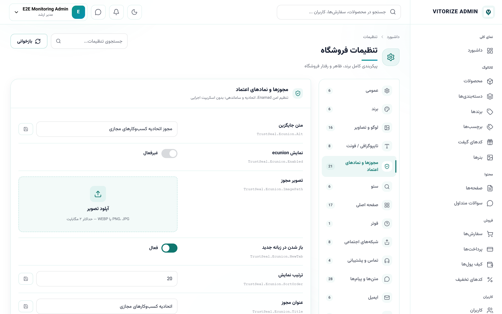
در تب تایپوگرافی میتوانید فونت اختصاصی بارگذاری و محدودهٔ اعمال آن را انتخاب کنید. پس از فعالسازی، برای دیدن نتیجه صفحهٔ فروشگاه را تازه کنید؛ پنل مدیریت معیار بررسی این تغییر نیست. نمادهای اعتماد نیز بهصورت امن و بدون اجرای اسکریپت دلخواه تنظیم میشوند.
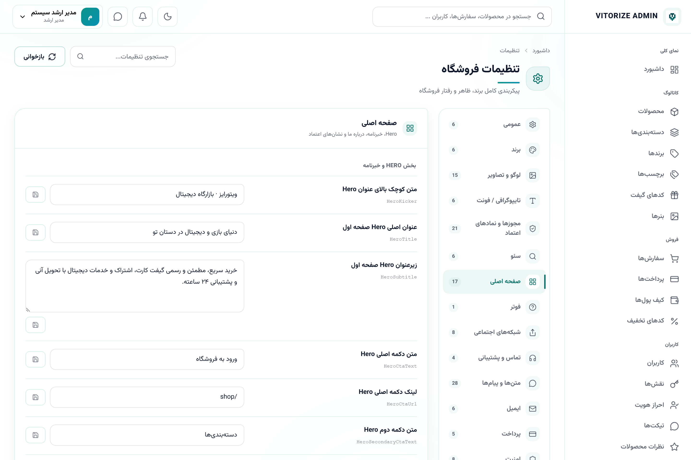
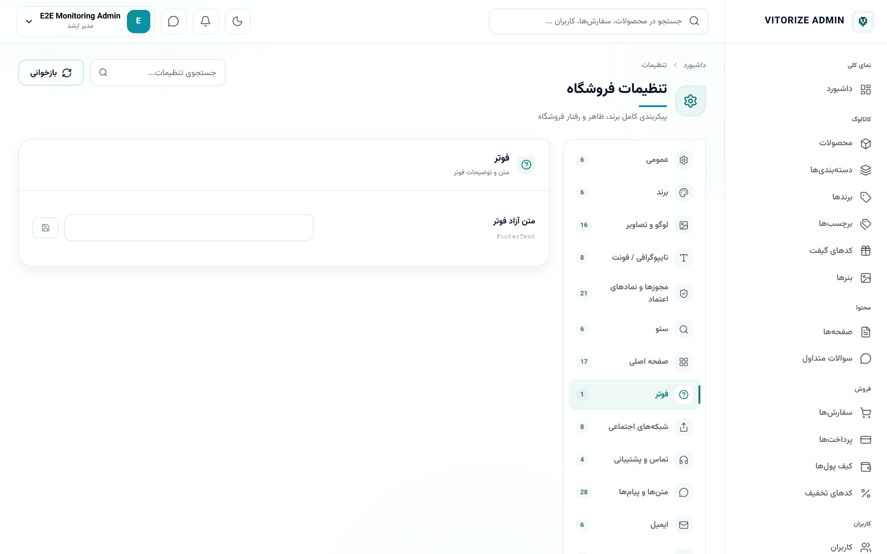
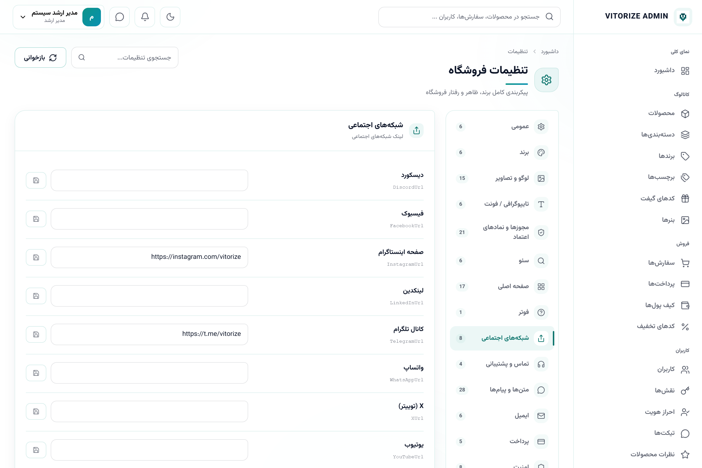
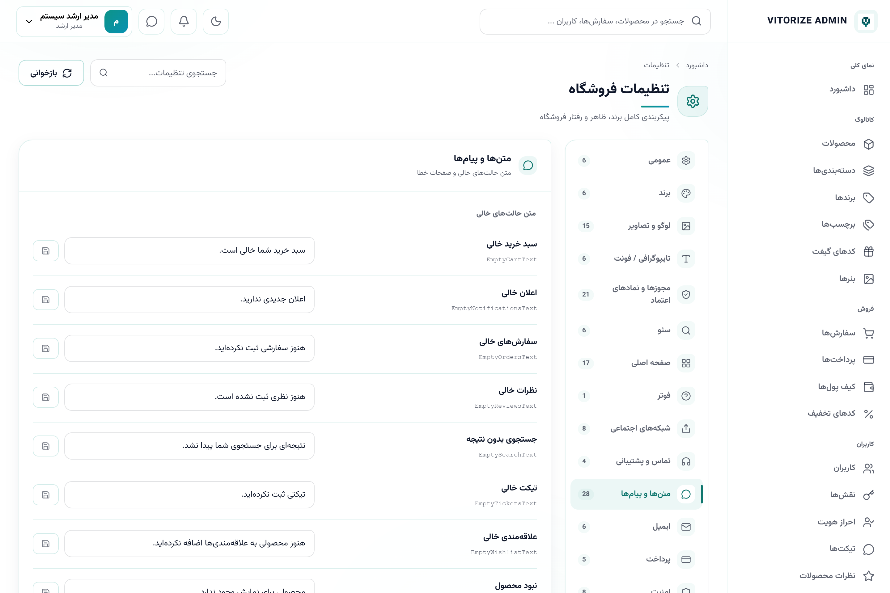
این چهار تب، متنهای ثابت فروشگاه را کنترل میکنند. «متنها و پیامها» جایی است که پیام صفحات خطا و حالتهای خالی را با لحن فروشگاه خود هماهنگ میکنید.
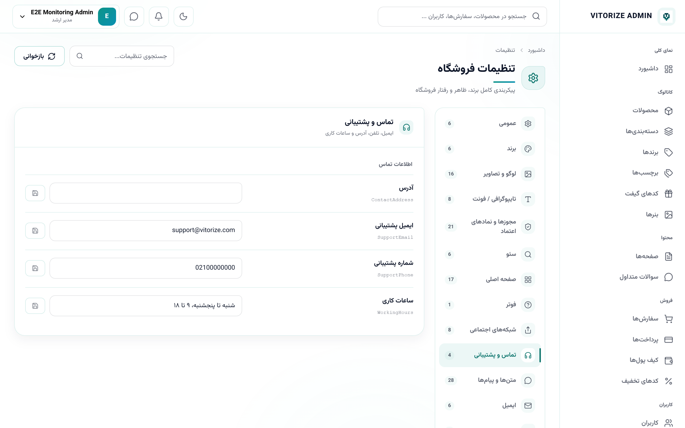
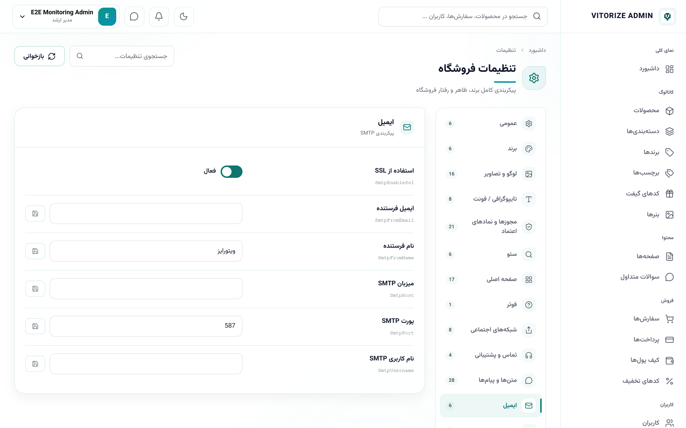
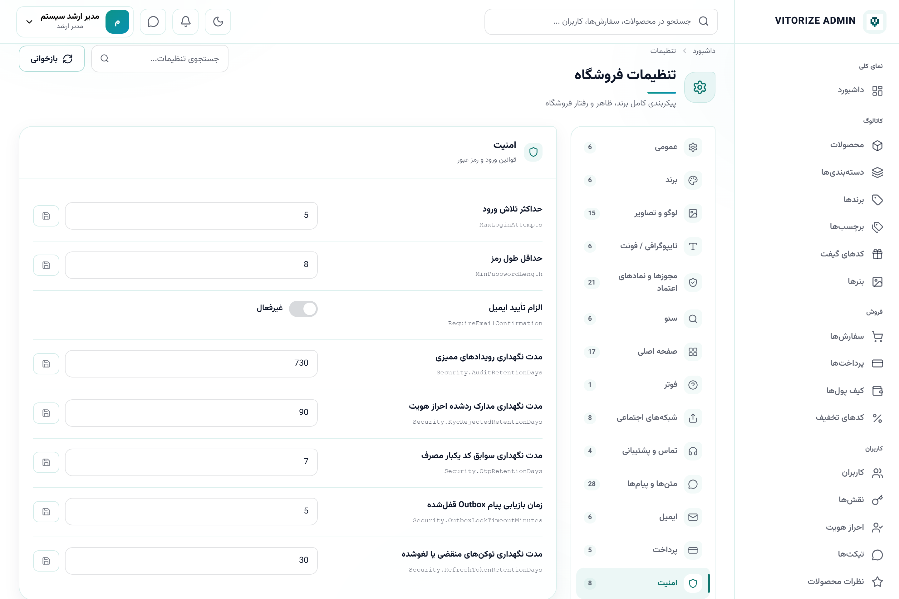
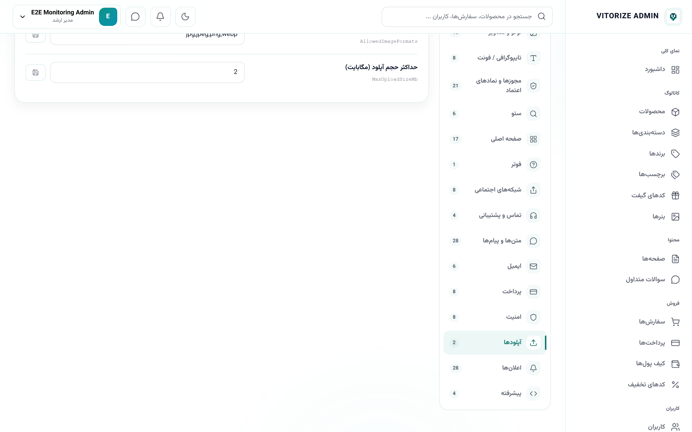
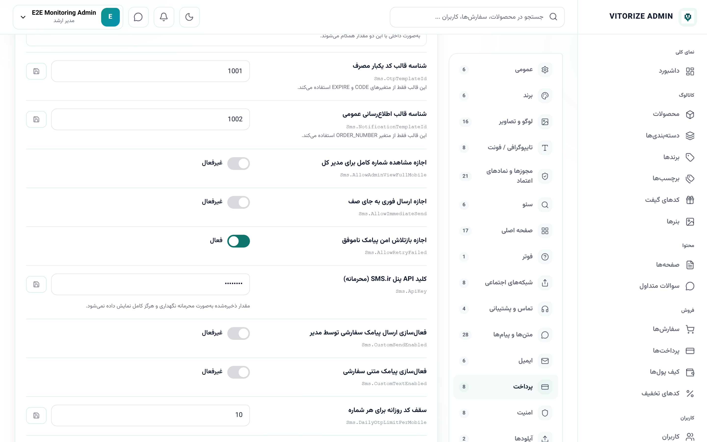
اطلاعات تماس در فوتر و صفحهٔ «تماس با ما» نمایش داده میشود. تنظیمات امنیت، سختگیری قواعد ورود و رمز عبور را تعیین میکند. «آپلودها» محدودیت حجم و فرمت تصاویر را کنترل میکند و «اعلانها» پیکربندی سرویس پیامک را در بر میگیرد.
#c15#جمعبندی عملی این راهنما: عادتهای روزانه و پاسخ سریع به وضعیتهایی که بیشتر پیش میآیند.
| وضعیت | بررسی و اقدام |
|---|---|
| ذخیره نشد و پیام قرمز نمایش داده شد | پیام خطا دقیقاً زیر فیلد ایراددار نوشته میشود. مقدار را اصلاح و دوباره ذخیره کنید؛ فیلدهای الزامی با ستاره مشخصاند. |
| آپلود تصویر انجام نشد | فرمت و حجم فایل را با مشخصات کنار همان فیلد و محدودیتهای تب «آپلودها» مقایسه کنید. |
| محصول در فروشگاه دیده نمیشود | وضعیت «فعال» و دستهٔ محصول را بررسی کنید. برای «تحویل آنی»، نبود موجودی کد باعث غیرقابل خرید شدن میشود. |
| مشتری کد دریافت نکرده است | ابتدا پرداخت را در «پرداختها» تأیید کنید، سپس در جزئیات سفارش ببینید قلم به دلیل احراز هویت نگه داشته شده است یا نه. |
| برای قلم سفارش، دکمهٔ تحویل نمیبینم | روش تحویل آن قلم را ببینید. اقلام «نیازمند پشتیبانی» از مسیر تیکت رسیدگی میشوند و عمداً دکمهٔ تحویل دستی ندارند. |
| تکمیل سفارش رد شد | سفارش هنوز قلم تحویلنشده دارد. ابتدا همهٔ اقلام را تحویل کنید. |
| مالیات در سفارش دیده نمیشود | وضعیت فعالبودن مالیات را در تب «پرداخت» بررسی کنید. سفارشهای قدیمی مقدار زمان ثبت خود را نگه میدارند. |
| تغییر فونت یا لوگو اعمال نشد | پس از ذخیره، صفحهٔ فروشگاه را تازهسازی کنید. پنل مدیریت معیار بررسی تغییرات ظاهری فروشگاه نیست. |
| ارتباط صفحه قطع شد | اتصال شبکه را بررسی و صفحه را تازه کنید. دادههای ذخیرهشده از بین نمیروند. |